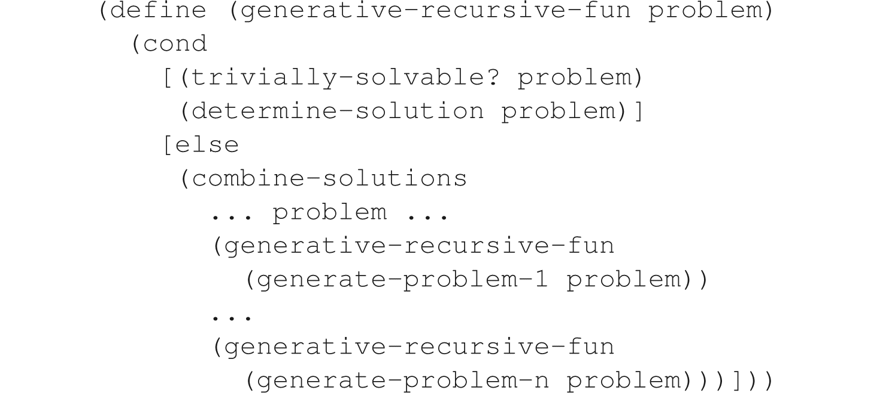
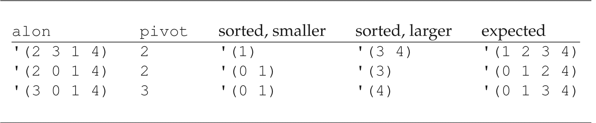

26.1 Adapting the Design Recipe
Let’s examine the six general steps of our structural design recipe in light of the examples in the preceding chapter:
• As before, we must represent the problem information as data in our chosen programming language. The choice of a data representation for a problem affects our thinking about the computational process, so some planning ahead is necessary. Alternatively, be prepared to backtrack and to explore different data representations. Regardless, we must analyze the problem information and define data collections.
• We also need a signature, a function header, and a purpose statement. Since the generative step has no connection to the structure of the data definition, the purpose statement must go beyond what the function is to compute and also explain how the function computes its result.
• It is useful to explain the “how” with function examples, the way we explained bundle and quick-sort< in the previous chapter. That is, while function examples in the structural world merely specify which output the function is to produce for which input, the purpose of examples in the world of generative recursion is to explain the underlying idea behind the computational process.
For bundle, the examples specify how the function acts in general and in certain boundary cases. For quick-sort<, the example in figure 148 illustrates how the function partitions the given list with respect to the pivot item. By adding such worked examples to the purpose statement, we—the designers—gain an improved understanding of the desired process, and we communicate this understanding to future readers of this code.
• Our discussion suggests a general template for algorithms. Roughly speaking, the design of an algorithm distinguishes two kinds of problems: those that are trivially solvable and those that are not. If a given problem is trivially solvable, an algorithm produces the matching solution. For example, the problems of sorting an empty list or a one-item list are trivially solvable. A list with many items is a nontrivial problem. For these nontrivial problems, algorithms commonly generate new problems of the same kind as the given one, solve those recursively, and combine the solutions into an overall solution.
For this part of the book, “trivial” is a technical term.
Based on this sketch, all algorithms have roughly this organization:

The original problem is occasionally needed to combine the solutions for the newly generated problems, which is why it is handed over to combine-solutions.
• This template is only a suggestive blueprint, not a definitive shape. Each piece of the template is to remind us to think about the following four questions:
– What is a trivially solvable problem?
– How are trivial solutions solved?
– How does the algorithm generate new problems that are more easily solvable than the original one? Is there one new problem that we generate or are there several?
– Is the solution of the given problem the same as the solution of (one of) the new problems? Or, do we need to combine the solutions to create a solution for the original problem? And, if so, do we need anything from the original problem data?
To define the algorithm as a function, we must express the answers to these four questions as functions and expressions in terms of the chosen data representation.
For this step, the table-driven attempt from chapter 9 might help again. Reconsider the quick-sort< example from chapter 26.2. The central idea behind quick-sort< is to divide a given list into a list of smaller items and larger items and to sort those separately. Figure 150 spells out how some simple numeric examples work out for the nontrivial cases. From these examples it is straightforward to guess that the answer to the fourth question is to append the sorted list of smaller numbers, the pivot number, and the sorted list of larger numbers, which can easily be translated into code.

Figure 150: The table-based guessing approach for combining solutions
• Once the function is complete, it is time to test it. As before, the goal of testing is to discover and eliminate bugs.
Exercise 431. Answer the four key questions for the bundle problem and the first three questions for the quick-sort< problem. How many instances of generate-problem are needed? 
Exercise 432. Exercise 219 introduces the function food-create, which consumes a Posn and produces a randomly chosen Posn that is guaranteed to be distinct from the given one. First reformulate the two functions as a single definition, using local; then justify the design of food-create.